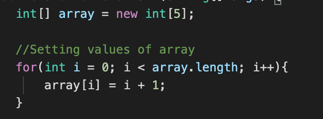
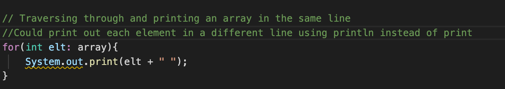
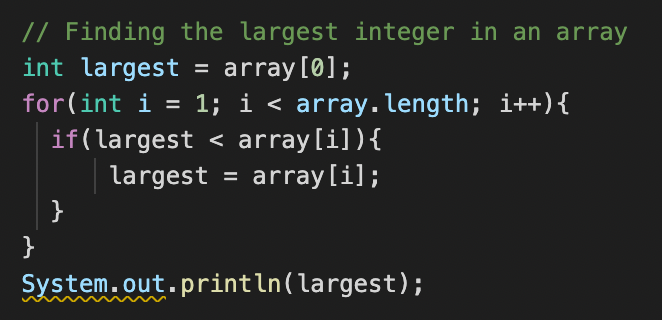
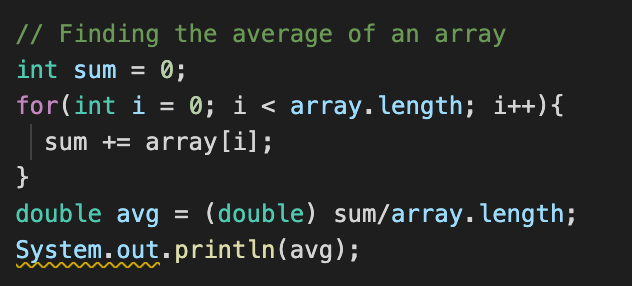
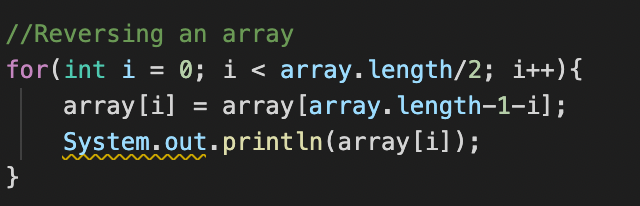

Arrays
To create an array, do this:
type[] name = new type[length of array];
f.x. int[] array = new int[4];
An integer array which consists of 4 elements.
As I said in Java, the first index is 0 and the last index is at array.length-1.
Setting values in the array
Printing the array
Largest of the array
Average of Array
Reverse Array
